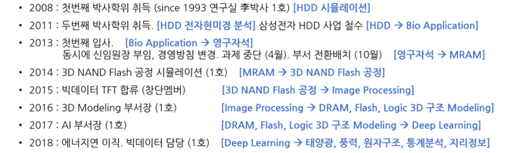
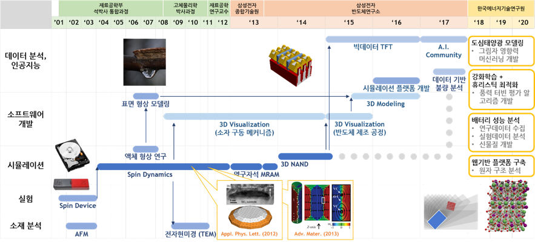
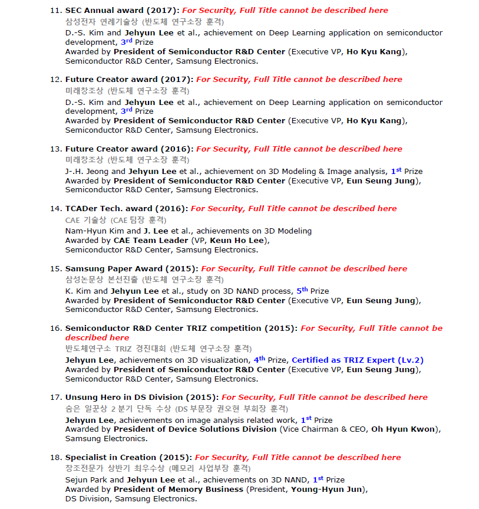
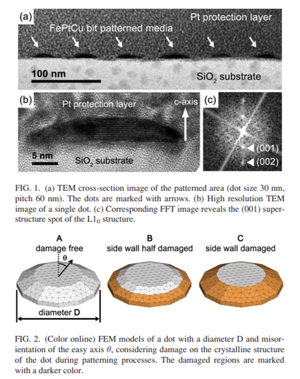
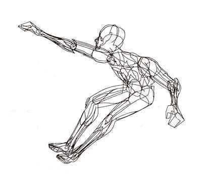
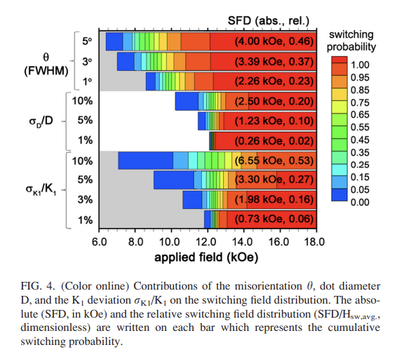
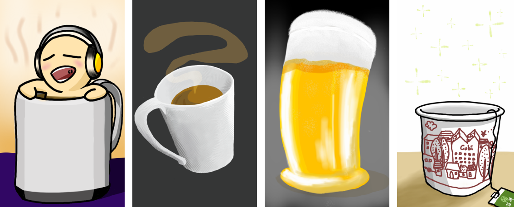

- 2019년 11월 9일부터 기록된 일일커밋이 2022년 8월 5일자로 1001일을 달성했습니다.
- 스스로 조금 뿌듯해서 관련된 기록을 남겨보고 싶었습니다.
- 커뮤니티 등을 통해 47분에게 받은 응답을 가상 인터뷰 형식으로 정리합니다.
2.데이터 분석 & 커리어
Q10. 지금 하는 일은 무엇인지?
목승찬A10. 정부출연연구소에서 데이터, AI등을 담당하고 있습니다.
여러 부서로부터 분석 지원 요청을 받아 공동연구를 합니다.
다양한 도메인을 접할 수 있다는 것이 장점과 단점으로 존재합니다.
요청을 하시는 분들께서는 도메인 전문가셔서, 분석 기법은 시행착오를 거치며 스스로 판단해야 합니다.
적용을 요청하신 기법과 최종적으로 적용한 기법이 상이한 경우가 대부분입니다.Q11. 딥러닝 활용한 프로젝트도 실무에서 하는지? 개인용 딥러닝 서버 스펙?
우드득,장민석A11. 현재 진행하는 업무 중 하나만 딥러닝이고 나머지는 트리 모델을 씁니다.
딥러닝을 일부러 사용하지 않는 건 아닙니다.
제게 오는 데이터의 양이 적고 image, 자연어 처리를 하지 않기 때문입니다.
도메인 연구의 일환이다 보니 예측력보다 설명력이 중요하기도 합니다.
간혹 필요할 때는 데스크탑에 설치된 GeForce RTX 2070을 사용합니다.Q12. 지금의 모습을 언제부터 꿈꿨는지? 꿈을 이루기 위해 무엇을 했는지? 머신 러닝 입문 계기?
TY,라이언,제이A12. 꿈꾼 적 없습니다. 코딩을 하며 숫자와 살 거라고는 상상도 못했습니다.
말씀드리자면 길지만 제가 꿈꾸던 모습과 지금의 모습은 아주 많이 다릅니다.
박사학위를 받은 분야도 다르고, 코딩을 조금씩 하게 된 것도 박사학위를 받은 뒤입니다.
당시는 시뮬레이션을 했는데 데이터를 복붙하며 처리하다 밤을 새고 나서 이러느니 코딩하겠다고 시작했습니다.
머신 러닝도 전 직장에서 알파고 이후, 2017년 부서가 만들어지면서 관리자(파트장)로 시작했습니다.
결국 수락했지만 이미 새로 시작되는 일마다 투입되는 일이 4년간 반복되어 지쳐있어 두 번을 거절했습니다.
“제가 뭘 안다고 하나요”라는 항변에 당시 그룹장님의 “넌 빨리 배우잖아.”라는 말씀이 기억에 남습니다.Q13. 실패의 기억?
신명진A13. 성공과 실패를 뭐라고 정의하면 좋을까요?
내 의지대로 됐는지 여부라면 대학원 졸업 이후 실패의 연속입니다.
애초에 한 분야의 전문가가 되고자 대학원에 진학했는데 그러지 못했기 때문입니다.
아무리 생각해봐도 저 개인의 힘으로는 어쩔 수 없는 큰 파도에 쓸린 느낌입니다.

하지만 결과적으로 행복해졌는지 여부를 따진다면 실패라고 부르기는 어려울지도 모릅니다.
본의 아니게 이런저런 변화를 겪었지만 한쪽 문이 닫히면서 다른 쪽 문이 열렸습니다.
여러 분야를 걸치면서 시야가 넓어졌고, 저쪽에서 배운 기술을 이쪽에서 발휘합니다.
지금도 같은 부서에 동료가 없는 것은 아쉽지만 외부에서 좋은 인연을 만나고 있습니다.

써놓고 보니 오해하시는 분이 있으실까봐 약간의 항변을 덧붙입니다.
일을 못해서 계속 새로운 일을 시킨 게 아니라 그 반대에 가까웠던 것 같습니다.
정확히는 당시 새로운 일을 시키신 분들께 “왜 저였나요?”라고 여쭤봐야겠지만요.

가만히 있었으면 “우리 나이때는 디테일보다 큰 그림 딱딱 짚어주는” 관리자가 되었겠지만,
제가 본 저런 말을 하는 사람들은 헛다리만 짚고 있었습니다.
저런 선배가 되기는 싫었습니다.
Q14. 데이터 분석 및 시각화를 하게 된 이유?
융A14. 일이니까 했습니다.
제가 하는 일은 결과만 잘 나온다고 끝이 아닙니다. 원인을 파악하고 인사이트를 발굴해야 합니다.
그러다 보니 자연스럽게 머신 러닝보다 데이터 분석에 집중하게 되었습니다.
머신 러닝도 제게는 서비스보다 데이터 분석의 일환입니다.
데이터 시각화도 머신 러닝과 데이터 분석을 하면서 자연스럽게 발을 들였습니다.
데이터 시각화에 쓰는 시간이 아깝다는 생각이 들면서 익숙해지자고 결심했습니다.
지금은 생각에서 그림으로 옮겨지는 시간이 제법 줄었습니다.
일전에 머신 러닝 결과를 발표한 박사님께 EDA는 어떻게 하셨나요?라고 질문했습니다.
그 박사님은 그게 뭔가요?라고 되물으셨습니다. 이건 좀 아닌 것 같습니다.
데이터는 들여다보지도 않고 모델만 돌리는 사람을 신뢰하기는 어렵습니다.Q15. 태블로도 다루는지?
JonsnowA15. 아닙니다.
하지만 분석 결과 배포에 유리할 것으로 생각되어 관심을 가지고 있습니다.
아직은 아니지만 조만간 interactive plot을 많이 할 것 같습니다.Q15. 다시 대학생이 된다면 무엇을 위해 어떤 준비를 할 것인지? 어릴 적으로 돌아간다면 어떤 업으로 살고 싶은지?
신명진,라이언A15. 컴퓨터 그래픽스를 배우고 싶습니다.
어쩌면 당시 독학으로 CAD와 포토샵을 배웠던 덕에 여러 기회를 거쳐 여기까지 온 것 같습니다.
재미로 했던 CAD 3D 모델링 덕에 대학원 시절 FEM(유한요소) 모델을 어렵지 않게 만들 수 있었고,
전자현미경으로 직접 관찰한 결과를 시뮬레이션할 수 있었습니다.

그런데 근본이 없이 눈과 손으로 배워서 하다 보니 기본기가 부족함을 자주 느낍니다.
학문의 초창기 신학을 포함한 철학, 과학, 의학이 구분되지 않았던 것 처럼,
컴퓨터과학의 초창기에는 물리 시뮬레이션과 컴퓨터 그래픽스가 구분되지 않았습니다.
근본을 제대로 익혔다면 더 나은 제가 되어 있을 것 같습니다.

그런데, 생각을 해보니 그 때도 데이터를 모아서 분석하는 연구를 했네요. 당시 저 분야에서 물성의 분포를 확률적으로 다루기 시작하는 분들이 있었습니다. 그 영향을 받아서 시도했던 것으로 기억이 납니다.

Q16. 깃헙을 통해서 포지션 제안이 온 적이 있는지?
츄로오스A16. 있습니다.
Q17. 분석가로서 커리어를 어떻게 정리하는지? 신입 데이터 사이언티스트에게 조언. 여러 프로젝트를 단기간씩 하는 것에 대한 조언?
김성호,김영동,난키A17. 제가 조언을 할 수 있는 입장은 아닌 것 같습니다.
저도 과거의 경력과 사실상 단절하고 데이터 분석가로서 새로운 경력을 쌓아가는 중이기 때문입니다.
연구자로서 논문을 출판하기도 해야겠지만 개발자속성을 띄고 있습니다.
모든 분야에서 동시에 인정받으면 좋겠지만 그러기 어려워서 나름의 순서를 정했습니다.
이 순서에서 딥러닝은 가장 뒤에 있습니다. 점점 더 문턱이 낮아지고 있다고 느껴서입니다.
그런데 여러 프로젝트를 동시에 하는 것은 좋지 않은 것 같습니다.
데이터 분석의 특성상 데이터에 코를 박고 모든 감각으로 흡수해서 단기 기억을 동원해야 합니다.
그러다보니 여러 프로젝트를 동시에 하면 효율이 극심하게 떨어집니다.
석사시절 실험할 때, 박사과정 이후 시뮬레이션을 할 때는 겪지 못했던 상황입니다.
관련이 있을지 없을지도 모르는 인자들끼리 상관성을 파악하고 파생변수를 만들어야 하기 때문입니다.
이것도 훈련이라면 훈련이라고, 연습이라면 연습이라고 생각하고 있습니다.Q18. 데이터 사이언스에서 기본적으로 갖춰야 할 개념
우왕A18. 역시 제가 조언을 할 수 있는 입장은 아닌 것 같습니다.
제 생각만 말씀드리자면, 데이터 분포와 확률에 대한 개념이 가장 중요할 것 같습니다.
하나를 더 보태면 분석가의 성격이 조금 집요할 필요가 있다고 생각합니다.
노이즈에 묻힌 데이터의 본 모습을 끄집어 내는게 간단하지는 않다고 느끼기 때문입니다.
3. 생활
Q19. 하루 일과, 일-삶-배움의 균형은 괜찮은지? 업무 시간과 우선 순위는 어떻게 관리하는지?
게으른파이썬,김영동,냥,이종원,황성주A19. 가족에게 어느 정도 희생을 강요하고 있다고 느낍니다.
아침 루틴을 마치고 출근해서 일을 한 뒤, 퇴근해서 가족과 시간을 보냅니다.
일주일에 두 번 아침식사 전에 전화 영어를 하고, 아침식사와 점심식사 후 30분 산책을 합니다.
이직 이후 가족과 보내는 시간이 크게 늘어난 것은 사실이지만, 바쁘면 여전히 야근과 주말 근무를 합니다.
업무 시간과 우선 순위는 마감에 맞춰 정해진다고 보는게 맞을 것입니다.
아침에 출근하면서 하루를 시뮬레이션하는데, 시간 관리 능력이 많이 부족하다고 느끼고 있습니다.
가족과 보내는 시간과 함께 실무 능력을 확보하고자 이직을 했습니다.
그래서 술을 거의 먹지 않습니다. 술을 먹으면 먹는 시간 + 회복 시간까지 손실이 생기기 때문입니다.
한 달에 맥주 한 두 캔 정도가 보통인 것 같고, 그나마 집에서 먹습니다.
술자리에서 오가는 말을 믿지 않기 때문일지도 모릅니다.Q20. 명절, 육아 등 체력 관리
시나몬A20. 체력은 타고난 면이 큰 것 같습니다.
하루에 다섯 시간만 자도 충분하다고 느끼고 며칠 무리를 해도 괜찮다고 느낍니다.
느낀다고 말하는 것은, 그 때는 괜찮은데 마감이 지나면 후폭풍이 없지 않기 때문입니다.
전문가에게 받은 TCI(기질 및 성격 검사)에서 인내심이 상위 3%라고 나왔습니다.
어쩌면 고통에 둔감한 건지도 모릅니다.Q21. 페가에게 커피란?
엘카인A21. 업무 전환 스위치입니다.
일을 시작할 때, 하는 일의 종목을 바꿀 때 커피를 마시면서 주위를 환기합니다.
하루를 시작할 때 정신을 차리는 영약이기도 합니다.
Q22. 독서의 계기와 독서의 방법?
바로잡기A22. 책에 따라 다릅니다.
즐기기 위해 읽는 책이 있고 살아남기 위해 읽는 책이 있습니다.
즐기기 위해 읽는 책은 글자 그대로 재밌어서 보는 책입니다. 소설을 오래 못 읽어서 아쉽습니다.
살아남기 위해 읽는 책은 업무 관련한 책입니다.
두 번 볼 새가 없다는 것을 알고 있기 때문에 한 번 읽을 때 머리에 넣으려고 합니다.
슬렁슬렁 읽어서는 머리에 들어오지 않는 걸 경험으로 압니다. 새벽에 집중해서 읽습니다.Q23. 인생에서 이루고 싶은 꿈/삶의 지향점?
최우성A23. 있었는데 잊었습니다. 다시 찾고 있습니다.
약 10년간 급류에 휘말려서 눈앞의 목적이 생존이었습니다.
숨을 쉴 때마다 물을 먹으면서 괴로워하다가 정신을 차린지 얼마 되지 않습니다.
영화 gravity를 극장에서 보고 감동에 젖어 아래 그림을 그렸는데 저 심정으로 10년쯤 살았습니다.
한 대 얻어맞기 전에 뭔가 있었는데 잊어버렸습니다. 새로 찾아야 합니다. 좋은 게 있겠죠? :)
4. 기타
- 공개적으로 답하기 어려운 질문, 제가 답하기에 지식과 생각이 너무 짧은 부분을 질문주신 분들이 있습니다.
- 이 분들께는 제가 개인적으로 답을 드리겠습니다.
- 이 블로그에 이렇게 개인적인 글을 올리는 것은 처음입니다. 마지막일지도 모릅니다.
- 언젠가 소리소문 없이 지워질 수도 있습니다.
- 읽어주셔서 감사합니다.